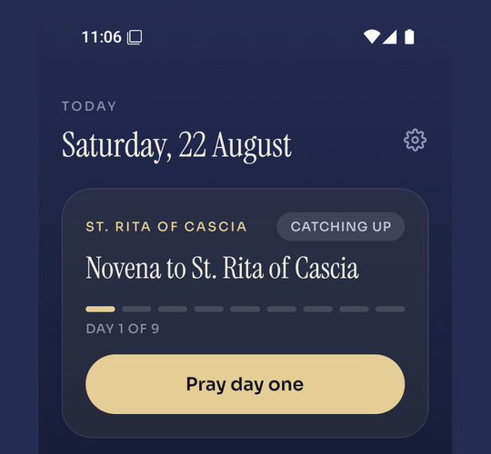
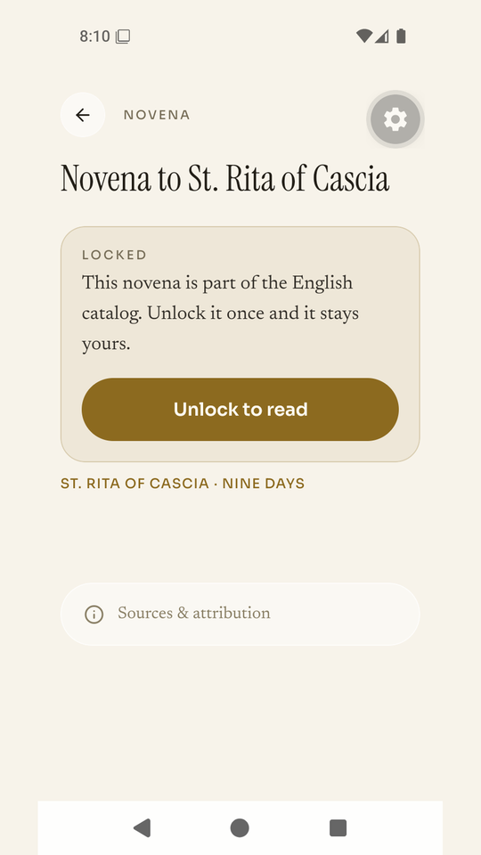

Um app católico de novenas para Android
Encontre seu santo. Reze a novena.
Nove dias, um de cada vez.
Sem assinatura. Sem conta. Sem anúncios. Funciona sem internet.
Reze aqui a novena a São Judas TadeuO texto completo dos nove dias está neste site.
Em breve no Google Play. O Novena ainda não está disponível publicamente no Google Play. Esta página terá o link no dia em que estiver. Não há versão para iPhone.
O que é
Uma novena são nove dias de oração por uma única intenção. Os católicos rezam novenas há séculos, e a parte difícil nunca foi encontrar as palavras. É lembrar no quarto dia.
O Novena traz o texto completo de cada novena, guarda o ponto onde você parou e, se você quiser, envia um lembrete diário discreto no horário que você escolher. Se perder um dia, seu progresso fica onde estava. Não há sequência para quebrar.
O que esperar
Suas intenções ficam no seu celular.
Suas intenções, seu progresso e os horários dos seus lembretes ficam guardados só no seu aparelho. Não há conta, nem servidor próprio, nem análise de uso, nem publicidade.
Funciona sem internet.
Todas as novenas que você pode ler já estão no seu celular. Modo avião não é problema.
Cada oração mostra sua fonte.
Toque em Fontes e atribuição em qualquer novena para ver de onde vem o texto.
Nunca terá assinatura.
Cinco novenas são gratuitas, com todos os recursos. O restante do catálogo é desbloqueado com uma compra única pelo Google Play. Nada se renova.
Grátis no app
Estas cinco novenas em português são gratuitas, com lembretes, modo escuro, tamanhos de texto e seu histórico de oração. O texto completo delas também está neste site.
- Novena a São Judas Tadeu, Apóstolo das Causas ImpossíveisGrátis
Composição original escrita para o app Novena; não é uma versão da oração tradicional a São Judas.
Causas impossíveis, Situações desesperadoras, Emprego e trabalho
- Novena a Santo Antônio de PáduaGrátis
Objetos perdidos, Causas impossíveis, Situações desesperadoras, Confiança em Deus
- Novena a São JoséGrátis
Emprego e trabalho, Paternidade e família, Uma morte serena, Confiança em Deus
- Novena ao Espírito SantoGrátis
Os dons e frutos do Espírito Santo, Orientação e discernimento, Vocações, Confiança em Deus
- Novena a Nossa Senhora Desatadora dos NósGrátis
Conflitos familiares, Confiança em Deus, Causas impossíveis, Situações desesperadoras
Por dentro do app


Cinco idiomas
A interface do app e as novenas estão disponíveis em inglês, espanhol, português (Brasil), italiano e filipino. Cada idioma tem seu próprio catálogo de 23 novenas, e as cinco novenas gratuitas mudam um pouco de um idioma para outro.
A contrapartida
Como nada fica guardado fora do seu celular, nada pode ser recuperado se você apagar o app. Suas compras voltam com Restaurar compras, mas suas intenções e seu histórico não. Não há backup nem sincronização, de propósito.
Reze com lembretes
O app guarda o ponto onde você parou e, se você quiser, lembra você uma vez por dia durante os nove dias.
Em breve no Google Play. O Novena ainda não está disponível publicamente no Google Play. Esta página terá o link no dia em que estiver. Não há versão para iPhone.